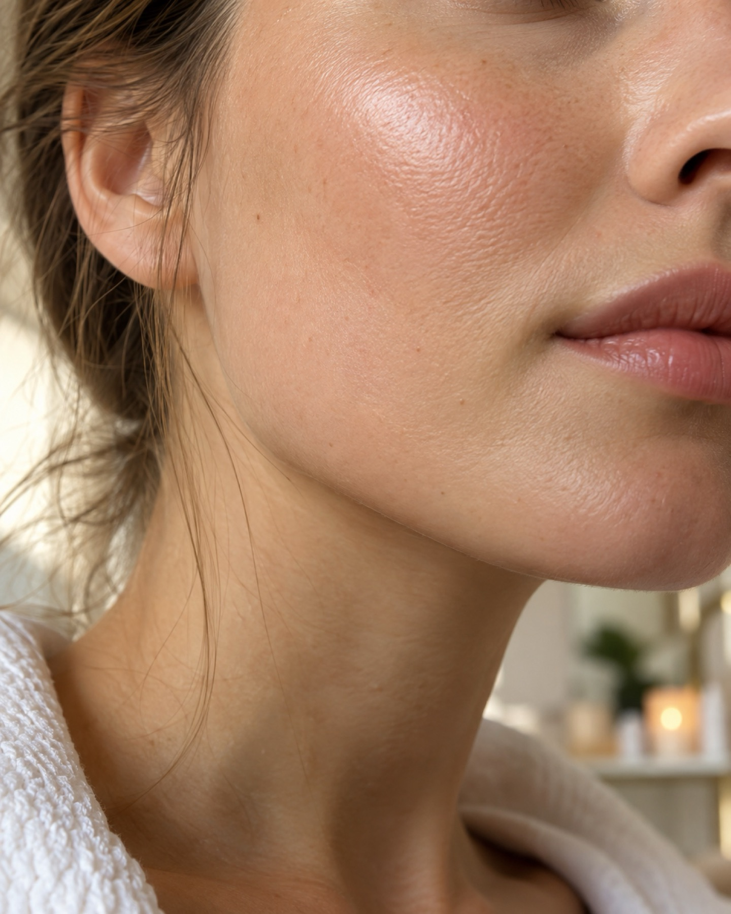

Gesicht & Haut
Zuerst die Hautanalyse. Danach suche ich Reinigung, Pflege und Wirkstoffe aus, die zu deinem Hauttyp passen. Nicht mehr, als nötig ist.
- Hautanalyse
- Tiefenreinigung und Pflege
- Empfehlung für zu Hause
Gesicht, Brauen, Wimpern. Ich schaue erst hin und mache dann, was deine Haut braucht.

Zuerst die Hautanalyse. Danach suche ich Reinigung, Pflege und Wirkstoffe aus, die zu deinem Hauttyp passen. Nicht mehr, als nötig ist.

Die Form richtet sich nach deinem Gesicht, nicht nach dem Trend. Vorher sagst du mir, wie viel sich ändern soll.

Ein Schwung, der den Blick öffnet und nicht nach Aufwand aussieht. Je nach Augenform und Alltag.
Erst mal hinsetzen. Dann erzählst du, was du dir wünschst und was dich an deiner Haut gerade stört.
Ich sehe mir deine Haut genau an und sage dir, was mir auffällt. Daraus ergibt sich die Behandlung.
In deinem Tempo. Ist dir etwas unangenehm, sag es sofort.
Zum Schluss gebe ich dir eine Routine für zu Hause mit, die in deinen Alltag passt.


Seit 2020 habe ich mein Kosmetikstudio am Reichowplatz. Du sollst bei mir nicht nur behandelt werden, sondern auch verstehen, was mit deiner Haut los ist.
Ich arbeite lieber genau als schnell. Am Anfang reden wir, am Ende bekommst du einen Rat, den du zu Hause wirklich umsetzen kannst.
„Bei Betül war ich von der ersten Minute an gut aufgehoben. Sie erklärt alles und hat sich Zeit genommen.“
Selin K.„Meine Brauen sehen endlich natürlich aus und passen zu meinem Gesicht.“
Laura M.„Ruhige Atmosphäre, ehrliche Beratung. Und meine Haut war nach dem ersten Termin schon ein Stück klarer.“
Nadine P.Erst reden wir, dann folgt die Hautanalyse. Danach machen wir die Behandlung, die wir zusammen ausgesucht haben. Am Ende gibt es eine Pflegeempfehlung.
Das hängt von der Behandlung ab. Die Dauer sage ich dir bei der Terminanfrage, dann kannst du planen.
Du musst nichts vorbereiten. Komm gern ungeschminkt oder bring Abschminkprodukte mit. Bei Hautproblemen oder Allergien sag mir bitte vorher Bescheid.
Melde dich so früh wie möglich, per Telefon oder Instagram-Nachricht. Dann suchen wir einen neuen Termin.
Ja. Ich stimme Produkte und Vorgehen auf deine Haut ab. Reagierst du schnell empfindlich, klären wir das vorher.
Am schnellsten klappt es per Instagram-Nachricht oder Telefon. Das Formular geht auch.
touched BY BETÜL ÇAKIR